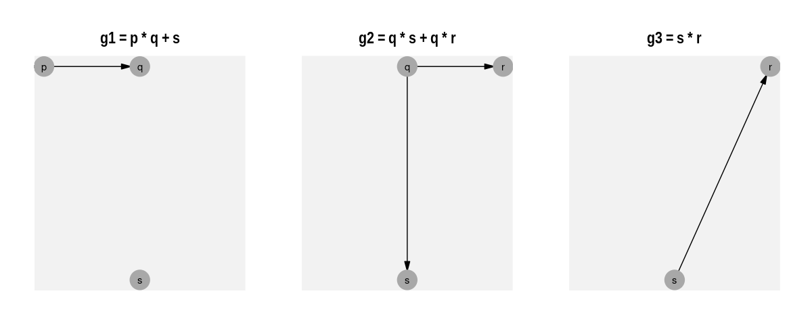
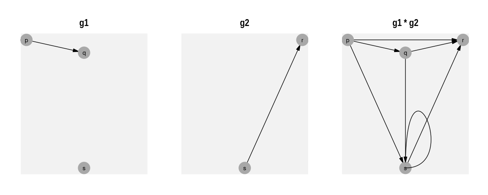
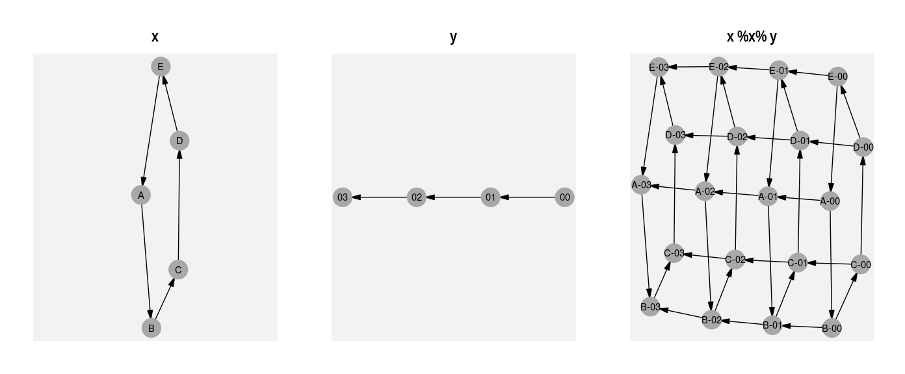

DAG operations of ralget are now in the raldag package.
Ralget creates and combines graphs with algebraic operations.
Combining Vertices
Take the following vertices:
The + operator places vertices in the same graph.
The * operator joins one vertex to another.
g1 <- p * q + s
g2 <- q * s + q* r
g3 <- s * r
Combining graphs
Connecting graphs ( * )
The * operator creates a link from each vertex in the first graph to each vertex in the second graph.
g1 * g3
The Cartesian product ( %x% )
The %x% operator creates the graph product.
x %x% y
#> Joining, by = "name"
Some more on vertices
Vertices are created with the v() function, which takes a name and list of attributes associated with the vertex. This creates a ralget/tidygraph object:
v("x", Latitude= 78.26077, Longitude= -94.11077)
#> # A tbl_graph: 1 nodes and 0 edges
#> #
#> # A rooted tree
#> #
#> # Node Data: 1 x 2 (active)
#> name .attrs
#> <chr> <list>
#> 1 x <named list [2]>
#> #
#> # Edge Data: 0 x 2
#> # … with 2 variables: from <int>, to <int>Edges
Edge attributes are added by interleaving e() between graph multiplication.
Here’s a simple example:
Installation
You can install the development version from GitHub with:
# install.packages("devtools")
devtools::install_github("ianmoran11/ralget")